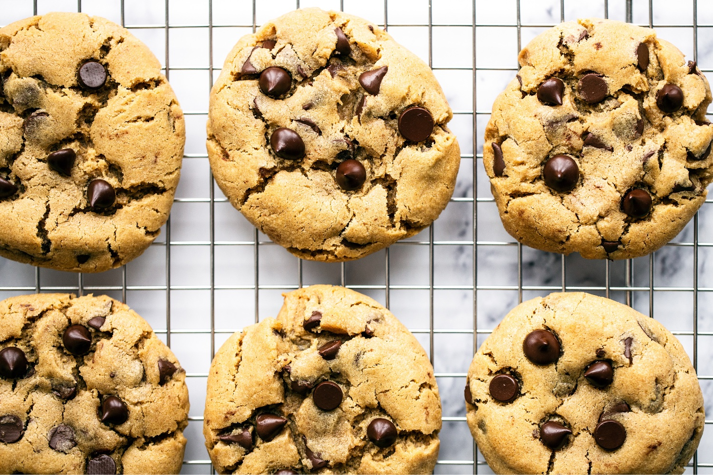

Perfect Peanut Butter Chocolate Chip Cookies

The cakey yet chewey cookies you're about to make
Ingredients
- 2 1/2 cups all-purpose flour
- 1 teaspoon baking soda
- 1 teaspoon making powder
- 1 teaspoon fine sea salt
- 1 stick unsalted butter
- 3/4 cup crunchy peanut butter
- 1/2 cup granulated sugar
- 1 cup packed dark brown sugar
- 2 large eggs plus one egg yolk, at room temperature
- 2 teaspoons vanilla
- 2 cups semi sweet chocolate chips
Steps
- Preheat oven to 350F. Line baking sheets with parchment paper.
- In a medium bowl, whisk together flour, baking soda, baking powder, and salt.
- In a large heat-safe bowl, microwave the butter until melted. Vigorously stir the
peanut butter into the hot butter until well combined. Stir in the granulated sugar
until well combined. Ass the eggs and yolk, one at a time, stirring well after each
addition. Add in the vanilla. Gradually stir in the flour mixture until just
combined. Stir in the chocolate chips.
- Dough may be a little loose and slightly crumbly. If it's unbearably crumbly, that's
likely due to differences among brands of peanut butter. If this is the case, add 2
tablespoons of milk.
- OPTIONAL: If time permits, cover the dough in plastic wrap and refrigerate for at least
24 hours but no more than 72 hours. Let the dough sit at room temperature until just
soft enough to scoop.
- Divide the dough into 3-tablespoon sized balls and drop onto prepped baking sheets.
Flatten dough slightly into discs with your palms. Dot each disk with a few extra
chocolate chips for picture-perfect cookies.
- Bake for 12 minutes, or until golden brown. Let cool for five minutes before moving
to wire racks to cool completely.
- Cookies can be stored in an airtight container at room temperature for up to 3 days